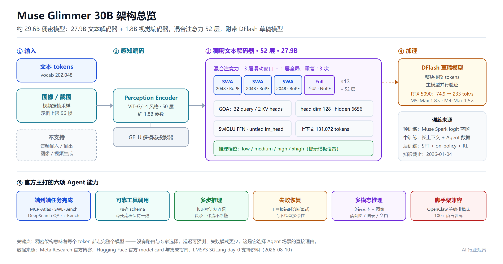
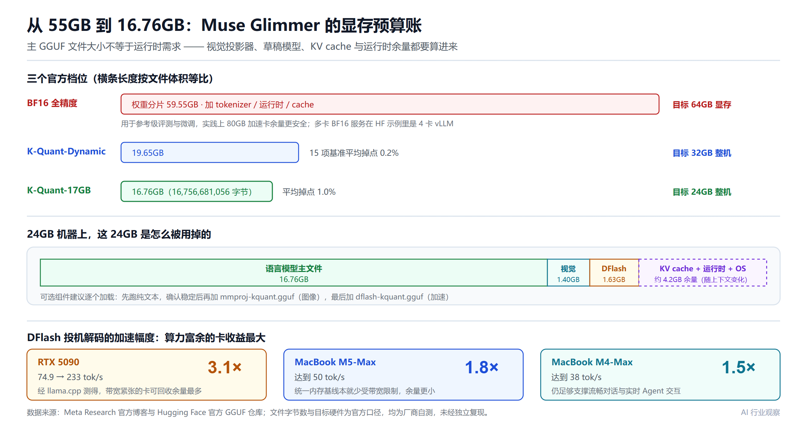
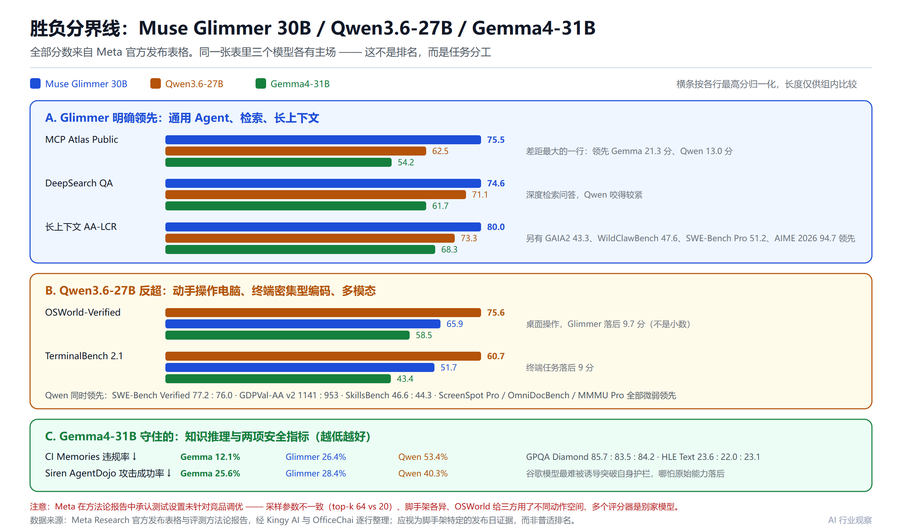
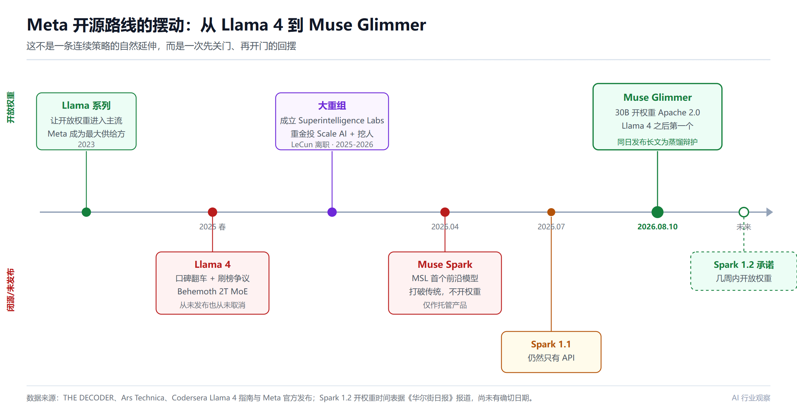

扎克伯格公开为"蒸馏"辩护：Meta 开源 30B Agent 模型背后的三场战争
8 月 10 日凌晨，扎克伯格干了一件让半个硅谷跳脚的事。
他发了一篇 6500 字长文，标题叫《The Future is for Everyone》。里面有一句话，精准踩在整个行业最痛的神经上——
"值得守护的原则是：你可以从任何你能观察到的东西中学习。"
翻译成人话：蒸馏别家的模型，完全合理。
OpenAI 和 Anthropic 过去一年反复指控中国实验室"偷"它们的模型输出来训练自己的。而扎克伯格现在站出来说，这事没问题，美国也该这么干。讽刺的是，就在两个月前，Meta 自己刚限制工程师使用 Claude Code 和 Codex——怕输出流进自家训练数据被对方追责。
嘴上说一套，手上另一套？不全是。因为同一天，他把嘴上说的那一套变成了实物：
Meta 开源了一个 30B 参数的 Agent 模型，叫 Muse Glimmer。
Apache 2.0 许可，权重直接丢在 Hugging Face 上，压缩后 16.76GB，一张 24GB 的消费级显卡就能跑。它是 Meta 自 Llama 4 翻车之后、沉默了一年多之后的第一个开放权重模型。而且扎克伯格同时承诺，几周内还要开放当前最强的 Muse Spark 1.2 的权重。
所以这不只是"又发了一个模型"。这场发布同时打开了三条战线：
- 一场关于能不能把 Agent 塞进 24GB 显存的工程战争
- 一场关于基准数字到底能信几分的方法论战争
- 一场关于开源合法性、蒸馏边界和 6000 亿美元该拿什么回报的战略战争
一条一条拆。
一、先把事实钉住：Muse Glimmer 到底是什么
发布方是 Meta Superintelligence Labs（MSL），现任 Chief AI Officer 是 Alexandr Wang。

关键规格（全部来自官方 model card、Hugging Face 集成指南和 SGLang 的 day-0 支持说明）：
- 参数：约 29.6B 总量，其中 27.9B 是稠密文本解码器，约 1.8B 是 ViT-G/14 风格的视觉编码器（50 层），中间用 GELU 多模态投影器连接。"30B"是四舍五入的名字
- 不是 MoE：这是一个稠密因果 Transformer，每个 token 都走完整个语言模型。没有路由、没有专家选择、没有 token 路径差异
- 混合注意力：3 层 2048-token 滑动窗口（用 RoPE）+ 1 层全局注意力（用 NoPE，即不加位置编码），4 层一个循环，重复 13 次共 52 层
- 极端 GQA：32 个 query head 对 2 个 KV head，hidden size 6656，head dim 128，FFN 用 SwiGLU
- 上下文：131,072 tokens（配置上限）
- 多模态：文本 + 图像输入，文本输出。视频按帧采样（官方示例处理器上限 96 帧），无音频输入输出，不生成图像视频
- 推理档位：low / medium / high / xhigh，通过提示模板设置
- 知识截止：2026 年 1 月 4 日
- 训练：从 Meta 更大的 Muse Spark 蒸馏而来——预训练阶段用 logit 蒸馏学习教师输出，中训练阶段喂长上下文和 Agent 密集数据，后训练阶段组合 SFT、on-policy 蒸馏和强化学习
那个"3 局部 + 1 全局"的注意力模式是整个设计的枢纽。滑动窗口层只看 2048 个 token，KV cache 开销极小；每四层插一个全局层，负责把信息拉通全序列。代价是它并没有为超长推理轨迹优化——这一点后面会变成一个具体的能力短板。
Meta 明确给它定位为「always-on 本地 Agent」：管日程、起草消息、整理文件、读截图。这类活儿需要深度接触个人上下文，所以它的卖点不是"更聪明"，而是"不用把你的邮件发到云上"。
二、第一场战争：把 Agent 塞进 24GB 的工程账
全精度下 30B 需要 55GB 以上显存，任何消费级显卡都装不下。Meta 用两招把它压进去。
2.1 量化：三个档位，两份掉点数据

Meta 提供两个官方 GGUF：
- K-Quant-17GB：主文件 16.76GB，目标 24GB 硬件，15 项基准平均掉点 1.0%
- K-Quant-Dynamic：19.65GB，目标 32GB 硬件，平均掉点 0.2%
- BF16 参考版：权重分片 59.55GB，官方建议 64GB 显存起步，实践上 80GB 加速卡更稳妥
这里有一个早期传播中被普遍搞错的点，值得强调：16.76GB 不是总需求。视觉投影器另占 1.40GB，DFlash 草稿模型另占 1.63GB，再加上 KV cache、运行时缓冲、操作系统和上下文相关的余量。所以 Meta 给 K-Quant-17GB 标的目标是 24GB 整机，而不是"17GB 就够"。
这和1-bit 量化的选型逻辑是同一套账：文件大小从来不等于运行时峰值内存，而 Agent 场景的 KV cache 又比普通对话更能吃掉余量——工具输出往复堆积，一个长任务的上下文膨胀速度远超单轮问答。
2.2 DFlash：投机解码带来的 3.1 倍，和 1.5 倍
Muse Glimmer 随包附带一个基于 DFlash（arXiv 2602.06036）的轻量草稿模型。思路是标准投机解码：小模型一次提议一整块 token，主模型并行验证，对的收下、错的改掉，输出质量不变但速度显著提升。这条技术路线的完整原理和竞争格局，可以参考DSpark 与 DFlash 两大投机解码路线对比。
Meta 公布的实测（配 K-Quant-17GB + 量化后的草稿模型）：
- RTX 5090：74.9 → 233 tok/s，3.1×（经 llama.cpp 测得）
- M5-Max：1.8×，达到 50 tok/s
- M4-Max：1.5×，达到 38 tok/s
英伟达卡和苹果芯片之间的这个落差不是 bug，而是架构决定的。投机解码本质上是用富余算力换访存次数，Apple 的统一内存在基线状态下本来就没那么受带宽限制，可回收的余量自然更少。反过来说，RTX 5090 这类"算力充裕、带宽相对紧张"的卡，才是投机解码收益最大的地方。
Meta 特意提到 DFlash 是针对消费级显卡的带宽约束调过的，而不是照搬数据中心 GPU 的配置。这个细节比 3.1× 这个数字本身更能说明这次发布的意图：它是一次面向本地部署的工程发布，不是一次刷榜发布。
2.3 生态：day-0 的完成度不错
- 已就绪：llama.cpp（PR #26841）、SGLang（day-0 支持）、vLLM（走 Transformers 后端）、Unsloth
- 随后几天：MLX、ExecuTorch、Ollama、LM Studio
- 托管方：Together AI、Fireworks AI、OpenRouter 均已上线。OpenRouter 定价 $0.30/M input tokens、$1.20/M output tokens（模型 ID
meta/muse-glimmer-30b，131K context），上线两天内已处理超过 77 亿 tokens - 硬件伙伴：AMD、Arm、Dell、Intel、NVIDIA
- 微调路径：PyTorch TorchTitan
最小可跑命令是两行：
curl -LsSf https://llama.app/install.sh | sh
llama serve -hf meta-models/Muse-Glimmer-30B-GGUF
确认基线跑通后再开草稿模型：
llama serve -hf meta-models/Muse-Glimmer-30B-GGUF \
--spec-type draft-dflash \
--spec-draft-n-max 15
官方推荐采样参数是 temperature 1.0、top-p 0.95、top-k 64，复杂编码和 Agent 任务用 high 或 xhigh 推理档。这套路径和主流推理框架的部署选型基本吻合：本地 GGUF 走 llama.cpp，正确性校验走 Transformers，多卡服务走 vLLM。
三、第二场战争：基准表能信几分
Meta 把 Glimmer 跟 Google 的 Gemma4-31B、阿里的 Qwen3.6-27B 摆在一张表上比了 26 行。结论表面上很漂亮，实际读下来是分裂的。

3.1 Glimmer 明确领先的地方
- MCP Atlas Public：75.5 vs Gemma 54.2 / Qwen 62.5——差距最大的一行，21 分和 13 分。工具协议调用是它训练的主战场，这个结果和 MCP 与 A2A 两套 Agent 协议的设计差异所描述的能力要求高度对应
- DeepSearch QA：74.6 vs 61.7 / 71.1
- GAIA2：43.3 vs 36.4 / 40.0
- WildClawBench：47.6 vs 37.6 / 43.2
- SWE-Bench Pro：51.2 vs 36.9 / 50.2
- AIME 2026：94.7 vs 89.2 / 94.1
- IFBench：77.0 vs 76.0 / 70.8
- 长上下文 AA-LCR：80.0 vs 68.3 / 73.3；Beam128K：65.1 vs 58.2 / 63.0
3.2 Qwen3.6-27B 反超的地方（这块更重要）
- OSWorld-Verified：Qwen 75.6 vs Glimmer 65.9——桌面操作能力，差 9.7 分，不是小数
- TerminalBench 2.1：Qwen 60.7 vs 51.7——终端任务，差 9 分
- SWE-Bench Verified：Qwen 77.2 vs 76.0
- GDPVal-AA v2：Qwen 1141 vs 953
- SkillsBench（带 skills）：Qwen 46.6 vs 44.3
- 多模态多数行：ScreenSpot Pro 76.1 vs 75.4、OmniDocBench v1.5 77.8 vs 75.8、MMMU Pro 75 vs 74——Qwen 微弱但稳定地领先
3.3 Gemma4-31B 守住的地方
- GPQA Diamond 85.7 vs 83.5、HLE Text 23.6 vs 22.0
- 两项安全指标：CI Memories 违规率 12.1%（Glimmer 26.4%、Qwen 53.4%）；Siren AgentDojo 攻击成功率 25.6%（Glimmer 28.4%、Qwen 40.3%）。也就是说，谷歌这个模型最难被诱导着突破自己的护栏，哪怕原始能力落后
3.4 方法论的硬伤：Meta 自己承认了
Meta 发了一份七页的评测方法论报告，比大多数发布稿都坦诚。也正因为坦诚，它暴露了这张表不能当成通用排名的原因：
- Meta 在竞品的自报分和自己的复现分之间，取更有利于呈现的那一个；只有三个模型都被 Artificial Analysis 覆盖时才用第三方数字
- 采样参数不一致：Glimmer 和 Gemma 用 top-k 64，Qwen 用 top-k 20；且 Qwen 在 GAIA2 和 WildClawBench 上温度切到 0.6
- 脚手架不统一：GAIA2 和 WildClawBench 跑 OpenClaw，SWE-Bench 用 Meta 自研的 bash+文件脚手架，TerminalBench 用 Terminus 2。脚手架换一套，结果能差出几个身位
- OSWorld 的接口不对等：给 Glimmer 和 Qwen 用 Claude 式动作空间，给 Gemma 用 Gemini 式界面，测试子集还排除了 8 个 Google Drive 任务
- ScreenSpot Pro 用了迭代裁剪缩放工具，最多十轮验证、三次重启——这不是朴素的单次定位
- OmniDocBench 用了修改过的两分量评分和更简单的匈牙利匹配，而非官方 v1.6 的 MGAM 方法
- 多个评分器是别家模型：Gemini 2.5 Pro、GPT-5.4、gpt-oss-120b、Claude 4.6 变体
Meta 在报告里直接写明，它的测试设置没有针对竞品调优。
这些选择不让结果失去价值，但它们把结果的性质限定住了：这是脚手架特定的发布日证据，不是普适排名。要拿它做硬件采购或工作流承诺，必须先在你自己的任务、运行时、提示、工具 schema、采样参数和模型版本上复现一遍。
3.5 第三方视角：Qwen 仍在效率前沿
Artificial Analysis 的评估提供了一个更冷静的锚点：Glimmer 的智能指数比同尺寸的 Gemma 4 31B 高 5 分，大致追平了 1T 总参数的 Kimi K2.5——用了 33 分之一的参数。这确实是很强的参数效率。
但同一份评估也指出：Qwen3.6-27B 仍然站在"智能 vs 参数"的前沿曲线之上，而且尺寸还更小一点。
《The Kaitchup》的分析补了一个技术层面的解释：Glimmer 的注意力设计异常轻量，131K 的上下文窗口相对偏短，说明它没有围绕 Qwen3.6 那种动辄超过 10 万 token 的超长推理轨迹来训练。这带来一个有意思的可能性——Glimmer 也许能以接近 Qwen3.6 的性能，跑出接近 Gemma 4 的 token 效率和明显更低的内存占用。对 Agent 工作负载来说，token 效率可能比单点基准分更值得关心，因为一个长任务里模型多想 5 万个 token，就是实打实的时间和电费。
一句话概括这场基准战争：Meta 回到了游戏里，但没有领先这个游戏。通用 Agent 推理和检索类任务现在偏向 Meta，动手操作电脑和终端密集型编码仍然偏向阿里。选模型的人要问的不是"谁赢了"，而是"我的活儿落在哪一列"。
四、第三场战争：蒸馏合法性与 6000 亿美元的悬念
技术拆完了，这次发布最有信息量的部分其实在文档之外。
4.1 Meta 是怎么走到这一步的

回顾一下这条曲线：
- 2023：Llama 系列让开放权重进入主流，Meta 一度是开源模型最重要的供给方
- 2025 春：Llama 4 发布，口碑翻车，还惹上刷榜争议。家族里最大的 Behemoth（2T MoE）从未公开发布也从未正式取消——据报道，中训练阶段在 2T 规模上遇到 MoE 路由和 chunked attention 问题，Meta 对收益是否值得发布失去了信心
- 2025-2026：扎克伯格把 AI 部门重组为 Meta Superintelligence Labs，向数据公司 Scale AI 投入巨资并大举挖人，部门又反复重组。首席科学家、多年来 Meta AI 研究的门面 Yann LeCun 离职创业
- 2026 年 4 月：Muse Spark 发布，MSL 的第一个前沿模型，打破 Llama 传统不开权重，只作托管产品
- 2026 年 7 月：Muse Spark 1.1 仍然只有 API
- 2026 年 8 月 10 日：Muse Glimmer 开权重，Apache 2.0；同时承诺几周内开放当前最强模型 Muse Spark 1.2 的权重
所以这是一次路线回摆，而不是一次连续策略的自然延伸。
4.2 扎克伯格的论点，和那句刺眼的话
《The Future is for Everyone》的核心主张是：超级智能不应该攥在少数几个实验室手里，而该尽可能广泛地扩散。他写道，不存在单一的、仁慈的超级智能，安全来自多方之间的平衡；最危险的结局是领先实验室把最好的模型留给自己。
真正扎眼的是他为蒸馏别家模型的辩护。他写道，有人试图把这件事描绘成有害的，但值得守护的原则是"你可以从任何你能观察到的东西中学习"。
这句话精准落在一场正在进行的战争中间。OpenAI 和 Anthropic 反复指控中国实验室未经许可把它们的模型当教师用，Anthropic CEO Dario Amodei 多年来警告前沿级开放模型的风险并推动对华更严出口管制。在 OpenAI 看来，考虑到自己训练管线的投入，这种搭便车基本等于窃取——这场争论的完整脉络可以参考中国模型与蒸馏之战。
扎克伯格站到了对立面：美国不该限制开放模型，而该确保最好的开放模型出自美国，蒸馏也包括在内。他还想要给美国实验室的训练数据松绑，交换条件是与政府更紧密合作，比如让政府提前获得模型做安全测试。
而 Glimmer 自己就是从 Muse Spark 蒸馏来的——只不过教师是自家的模型。这一点有点微妙：给自家蒸馏找到的理由，正好也给别人蒸馏你提供了同一个理由。
讽刺之处还有一层。今年 6 月，据 The Information 报道，Meta 限制了自家工程师使用 Anthropic 的 Claude Code 和 OpenAI 的 Codex，目的正是不让这些输出流进 Meta 的训练数据；一份内部备忘录警告说这可能与合作公司发生严重升级。至少在修辞层面，这个升级现在已经发生了。
Meta 说这话有商业动因。在最强模型这条线上，它落在 OpenAI 和 Anthropic 后面。开放、广泛分发的模型是它唯一有可能声称领先的领域——而现在填着这个位置的，恰恰是被 OpenAI 和 Anthropic 指控吃它们输出的中国实验室。
4.3 6000 亿美元换来什么
对股东来说有个更大的问题悬着。据《华尔街日报》，Meta 仅今年就计划投入最多 1450 亿美元，主要用于数据中心，到 2028 年累计 6000 亿美元。
而对应的直接收入还看不到：顶级模型不如 OpenAI 和 Anthropic，没有可比规模的 API 生意，像 Glimmer 这样的开放模型按设计就不产生授权收入。7 月的财报电话会上，扎克伯格提了一个直接变现数据中心的云业务设想，没给细节，投资人抛了股票。内部全员会上，他也承认了 AI 改造中的弱点。
元宇宙的类比很难不想到：宣布一次代际平台转移，把公司改了名，往 Reality Labs 砸进几百亿，大众市场始终没出现。但有一个区别值得记下——AI 已经在改善 Meta 的核心业务（广告定向和推荐系统），而算力需求是真实存在的，整个行业的开支就是证明。
变现线索藏在长文的一个从句里：免费版本应该触达数十亿人，想要更多算力的人通过一个"动态拍卖机制"付费。需求决定价格，稀缺的数据中心容量给愿意出价最高的人。
Meta 对这套玩法太熟了。它的广告业务是地球上最大的竞价机器之一，多年来跑的就是这个逻辑。扎克伯格想把这套定价模型移植到算力上，这也和他 7 月暗示的云业务想法对得上。但目前它还只是一张草图：没有产品，没有时间表，也没说清适用于消费者、开发者还是企业。
所以这篇长文也是写给自家投资人的答案：如果赢不了最好模型的竞赛，那就宣布分发才是真目标，基础设施才是产品。这个逻辑能不能撑起 6000 亿美元，扎克伯格的哲学本身回答不了。
五、如果你真要用它：五个现实提醒
抛开叙事，落到工程上有几条值得先记住。
一、"开放权重"不等于"开源"。 Meta 公布了 BF16 权重、两个官方 GGUF、视觉投影器和 DFlash 草稿模型，都是 Apache 2.0，商业修改再分发的自由度确实很高。但发布不包含完整训练数据集、每一项数据清洗决策，以及可复现的训练管线。而且 model card 之外还挂了一份独立的 Usage Policy，列了禁止用途和部署责任，并声明不面向 18 岁以下人群。商业或受监管产品上线前，Apache 许可和这份政策都得让法务逐条过。
二、本地权重不等于本地数据。 这条对 Agent 模型尤其关键。一个本地聊天机器人可以真的离线；但一个接了邮件、文件、shell、浏览器和日历的 Agent，数据完全可以通过这些工具流出去，哪怕权重从未离开你的机器。要验证运行时是否回连、把本地 API 绑到 loopback、暴露到机器之外前先加认证，并把下载的权重和社区量化版当作供应链输入来对待。
三、提示注入是真实风险，且有数字。 Meta 自己的 Siren AgentDojo 结果是 28.4% 的攻击成功率。这不是生产安全保证。工具调用白名单、内容隔离、出网规则、审计日志、不可逆操作的人工确认，一个都不能省——开源 LLM 护栏的生产实践和代码沙箱隔离这两条防线尤其值得先搭起来。
四、131K 是上限，不是承诺。 长上下文会推高 cache 内存和 prefill 时间，而 Agent 轨迹里塞满了重复的工具输出。务实的做法是从 8K 或 16K 起步，记录失败案例，只在任务确实值这个成本时才往上加。
五、别为了一个 16.76GB 的文件去买机器。 等独立的峰值内存、长上下文和 DFlash 实测数据落在你具体那台硬件上再决定。托管方面，OpenRouter 已上线 Glimmer，定价 $0.30/M input、$1.20/M output——比同平台的 Muse Spark 1.2（$1.25/$4.25）便宜 4 倍。如果你的用量不大（比如每月几百万 token），走托管 API 的总成本大概率低于自购 24GB 显卡的折旧+电费+运维人力。
选型上的一句总结：如果你手里已经有 24-32GB 的机器，想要一个带视觉、带长上下文、有第一方 GGUF 路径的本地编码/研究/个人 Agent 模型，Glimmer 值得试；如果你在意的是桌面操作和终端密集型任务，Qwen3.6-27B 在 Meta 自己的表里就是更强的那个；如果你要的是低内存笔记本、开箱即用的生产安全性、音频工作流，或者需要经独立复现的基准领先来支撑决策，那就先跳过。这套判断和端侧模型的整体选型逻辑一致——尺寸类别里没有全能王，只有匹配度。
小结
Muse Glimmer 是一个做得相当扎实的工程发布：稠密 30B 加混合注意力、官方标定的 4-bit 量化、DFlash 投机解码带来的 3.1× 加速、day-0 的 llama.cpp 和 SGLang 支持、Apache 2.0 许可，以及一份罕见地坦诚到暴露自己方法论问题的评测报告。
如果只记住三件事：
- 技术上它是"够用且能装下"，不是"最强"：MCP Atlas 75.5、SWE-Bench Pro 51.2、AA-LCR 80.0 确实亮眼，但 OSWorld 落后 Qwen 9.7 分、TerminalBench 落后 9 分，多模态整体被 Qwen 微弱压住。Artificial Analysis 的判断是 Qwen3.6-27B 仍在效率前沿之上
- 基准表是发布日证据，不是排名：采样参数不一致、脚手架各异、OSWorld 接口不对等、多个评分器是别家模型，Meta 自己承认没为竞品调优。任何采购或架构决定都该先自己复现
- 最大的变量在模型之外：扎克伯格用一篇长文为蒸馏辩护、承诺开放 Muse Spark 1.2 权重、并把"动态拍卖机制"埋进从句里当变现草图。开源在这里不只是技术选择，它同时是政策主张、地缘定位和一份写给投资人的说明
对国内团队来说，这件事的现实意义可能是最朴素的那一条：同尺寸的本地 Agent 模型，现在多了一个 Apache 许可、来源在美国的选项，而 Qwen 在桌面操作和终端任务上仍然握着优势。竞争多一个玩家，选型的人就多一份议价能力——这比谁的基准表更好看重要得多。
免责声明
本文所有性能数据、基准分数、内存与速度数字均来自 Meta 官方发布材料、model card、评测方法论报告及第三方公开分析，绝大多数尚未经独立第三方复现。硬件配置、运行时版本、量化方案、脚手架、采样参数与提示模板的差异都会显著改变结果，本文不构成任何选型、采购或投资承诺。Meta 在其方法论报告中明确说明测试设置未针对竞品调优，跨模型对比应视为脚手架特定的参考而非普适排名。模型许可（Apache 2.0）之外另有独立的 Usage Policy，商业与受监管场景请由法务逐条核对官方原文。托管方定价以 OpenRouter 官网实时报价为准（截至 2026-08-12：$0.30/M input、$1.20/M output）。
参考来源
- Introducing Muse Glimmer: An Open Agentic Model That Runs on Your Device — Meta Research 官方博客
- meta-models/Muse-Glimmer-30B 官方模型卡 — Hugging Face
- meta-models/Muse-Glimmer-30B-GGUF 官方量化仓库 — Hugging Face
- Muse Glimmer 评测方法论报告 — Meta Research
- Muse Glimmer: local, agentic, multimodal, and open source — Hugging Face 集成指南
- Muse Glimmer — Meta AI Developer Center
- Muse Glimmer Usage Policy — Hugging Face
- The Future Is for Everyone — Meta 官方
- SGLang Adds Day-0 Support for Muse Glimmer — LMSYS 官方博客
- Run Local Agentic AI Workflows with Meta's Muse Glimmer on NVIDIA — NVIDIA 开发者博客
- Meta returns to open models with Zuckerberg's plan to out-copy China and sell compute by auction — THE DECODER
- Meta Muse Glimmer 30B: Benchmarks, Hardware, Pricing and How to Run It — Kingy AI
- Meta's Releases Muse Glimmer Local Model, Beats Google's Gemma4-31B On Most Benchmarks — OfficeChai
- Muse Glimmer 独立评估 — Artificial Analysis
- Muse Glimmer: Meta's 30B Model Built for Efficient Inference — The Kaitchup
- Zuck rekindles open weights Llama drama with Muse Glimmer — The Register
- With new open models, Meta pitches another reboot of its struggling AI strategy — Ars Technica
- Meta Reopens Its Models. Is This a PC Play or a Policy Play? — Futurum Group
- Meta Open Sources Muse Glimmer: A 30B Agentic AI Model — Open Source For You
- Zuckerberg Defends AI Distillation, Criticises Closed Labs — Trending Topics
- America's Answer to Qwen? Muse Glimmer Wins the 24GB Mac Fit Test — Kingy AI
- Llama 4 Complete Guide: Scout, Maverick, Behemoth Status & Muse Spark — Codersera
- DFlash 论文 — arXiv 2602.06036
- llama.cpp Muse Glimmer 支持 PR #26841 — GitHub
相关阅读
- DSpark 提速 85%、DFlash 加速 6x——推理加速两大技术路线怎么选
- 1-bit 量化与模型选型指南
- 端侧大模型 2026：Gemma4、MiniCPM 与 Qwen 怎么选
- 开源大模型选型指南
- MCP vs A2A：两套 Agent 协议的深度对比
- 中国模型与蒸馏之战
- 阿里 Qwen 的开源变现之路
- 大模型推理框架选型对比
- 开源 LLM 护栏生产实践指南
- AI Agent 代码沙箱隔离指南
- 浏览器 GUI Agent 横评：Page Agent、browser-use 与 Skyvern
- OpenCode：免费开源编程 Agent 上手指南
- Agent 治理与可观测性的隐性成本
- 企业 AI Agent 部署实战指南
推荐搭配装备
善其事，利其器。以下硬件能最大化你的AI体验👇
🔗 通过以上链接购买可支持本站持续运营 🙏